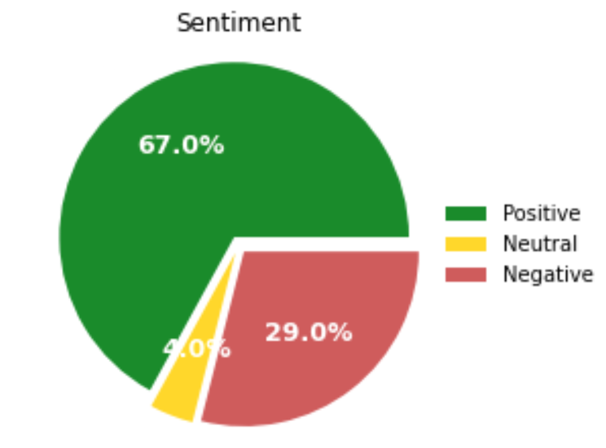
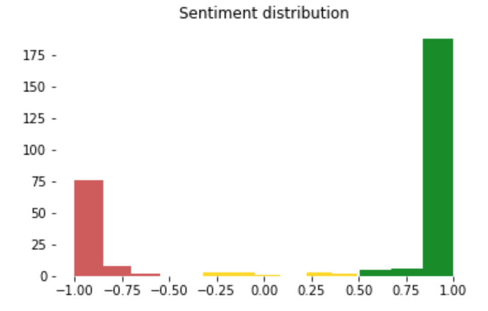
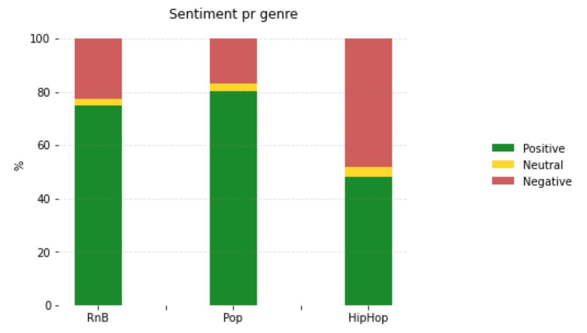
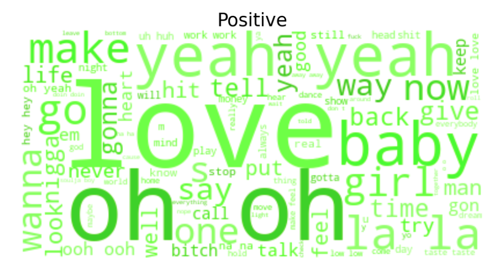
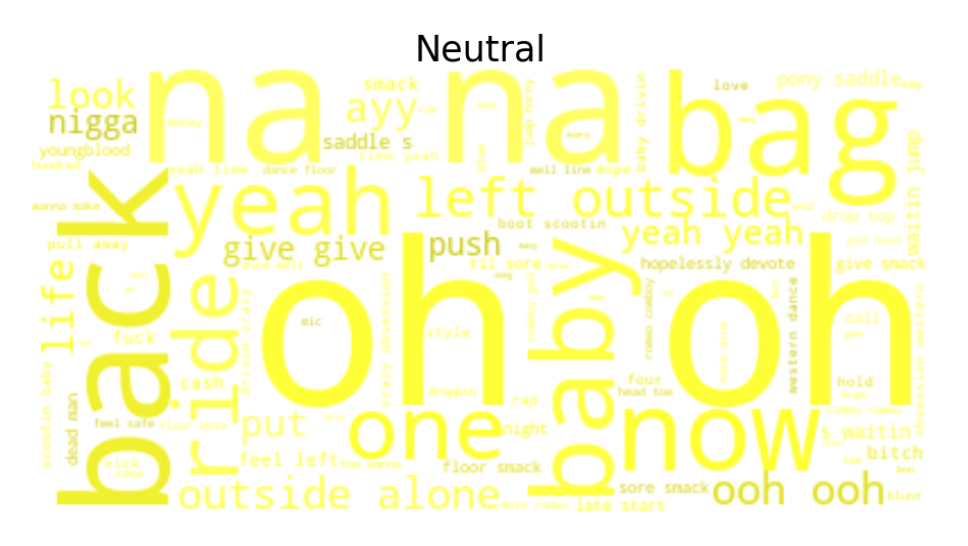
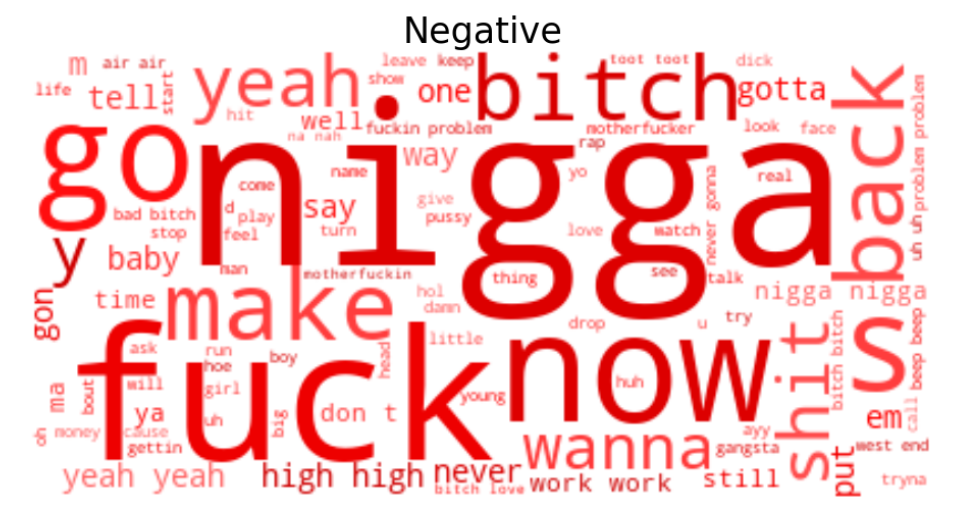

The purpose of sentiment analysis in our study is to get insight into the emotional part of the songs. We start by looking at the overall picture and investigate the distribution of sentiment, revealing wheather the top listen songs provides a positive or negative message. To get a deeper insight we investigate the sentiment for each genre to see if some genre is more violent/negative than others. In the end we look into the most positive and negative songs and what words discribes the sentiment groups to understand what makes a song negative. Hopefully this part of our study will provide knowledge of the emotional state of song and how the genres differents on thir sentiment.
Sentiment analysis is a machine learning technique capable of understanding the tone that underlie a text and thus classify the spoken human language as positive, neutral or negative. When analysing language data, a model should ideally take linguistics, word ambiguity, negation, capitalization, emojis, context, symbolism and sarcasm into account to capture meaningful microsignals within language patterns and subsequently determine the relative positivity or negativity of written text. An example of how the sentiment analysis should be able to capture negations can be seen in the sentence ”I do not like you” the word like is treated as a positive verb however, due to the linguistic structure, the proceeding phrase "I do not" yields negation of like, hence a negative sentence polarity.
There exist multiple sentiment analysis models, all for different purpose and each with their stregnth and weaknesses. Due to the often extream word used in songs the choosen model is Vader. Vader(Valence Aware Dictionary for Sentiment Reasoning), is trained on social media data and is thus naturally attuned to sentiments expressed in this context, including both polarity, intensity (”!!!”), emoticons (”:-/”), acronyms (”LOL”) and slang. The model relies on word-order relationship, i.e. classifying based on full sentence structure. The Vader sentiment model calculates and returns the probability of a given input text to be positive, negative, and neutral. For example:“The song is great!” gives the score: positive= 0.9, neutral = 0.1 and negative = 0. These three probabilities will always add up to 1. Furthermore the Vader sentiment calculates a compound score which is an aggregated normalized score with −1 being the most negative and +1 the most positive. To classify a song as positive, neutral or negative the Vader sentiment model provides a threshold on the compound score, see The Vader Sentiment Model github page for detailed describtion of the model and the thresholds. For this study we use the Vader sentiment classification which are as followed:
positive: compound >=0.5
neutral: -0.5 < compound < 0.5
negative: compound=<-0.5
It is interesting to investigate the overall sentiment for top listen songs. This gives an overall picture whether people like to listen to happy or sad songs. Based on the thresholds for the sentiment score each song is classified as negative, neutral or positve. The distribution of the classes can be seen below.
 
There are very few songs classified as neutral this indicates that music tent to have an extreame polariasied sentiment. Wheather it is very loving or extream angry. This gives an indication that music tries to avoke emotion within the listener. Furthermore the overall picture indicates that there are most postive songs. To further investigate this a sentiment analysis for each genre has ben made below to see if what kind of genre we chose to listen to has a specific sentiment indicator.
For a compareson between the genres a sentiment analysis for each genre has been caried out. The resulting classification of songs within each genre can be seen below.

It is clear to see that some genre tent to have more negative songs where others more positive. ..(skriv om hiphop fx)...
To evaluate how the model performs we have choose to look into the most positive and most negative songs. By reading the lyrics we can evaluate if these songs has been classified correctly. Another evaluation form would be to take af sample of the data and evaluate if these has been classified correctly.
Most positive songs| Song | Artist | Genre | Sentiment |
|---|---|---|---|
| Girls Like You (Remix) | Maroon 5 | Pop | 0.9999 |
| Mirrors | Justin Timberlake | RnB | 0.9999 | thank u, next | Ariana Grande | RnB | 0.9998 | Self Care | Mac Miller | HipHop | 0.9997 | Lose You To Love Me | Selena Gomez | Pop | 0.9997 |
We have chosen to look further into the lyricst of these songs to evaluate if they really do provide positive messages.
Girls Like youThis song is about a boy being madly in love with a girl. As the lyrics clearly says, it’s about someone who needs the loved one so badly even spending 24 yours together was not enough.
MirrorsThe song was inspired by Justin Timberlake wife and his grandparents’ relationship of 63 years. It is about finding true love and you other half. He is saying you and I are the same so she should never feel alone, we are one in the same. Even though the music is slow and tent to a sad tone, the lyrics is still positive with lots of love.
| Song | Artist | Genre | Sentiment |
|---|---|---|---|
| HUMBLE | Kendrick Lamar | HipHop | -0.9997 |
| Cruel Summer | Bananarama | Pop | -0.9996 |
| No Role Modelz | J. Cole | HipHop | -0.9994 |
| Dirty Laundry | Kelly Rowland | RnB | -0.9993 |
| Cruel World | Willie Nelson | Country | -0.9992 |
  